Album Covers
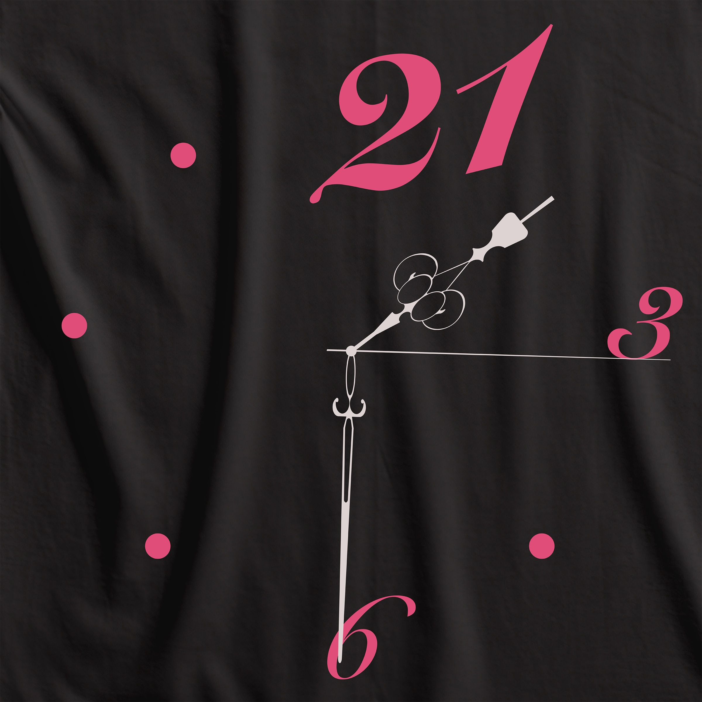
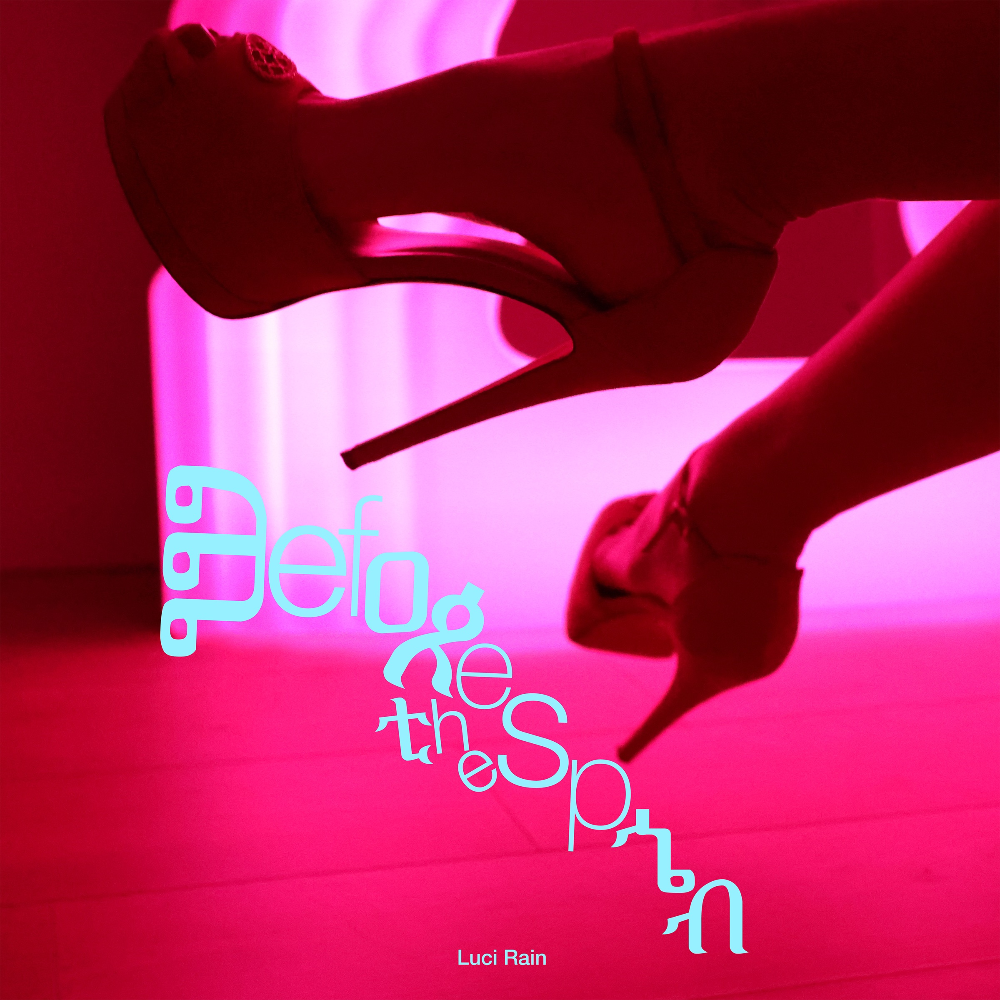
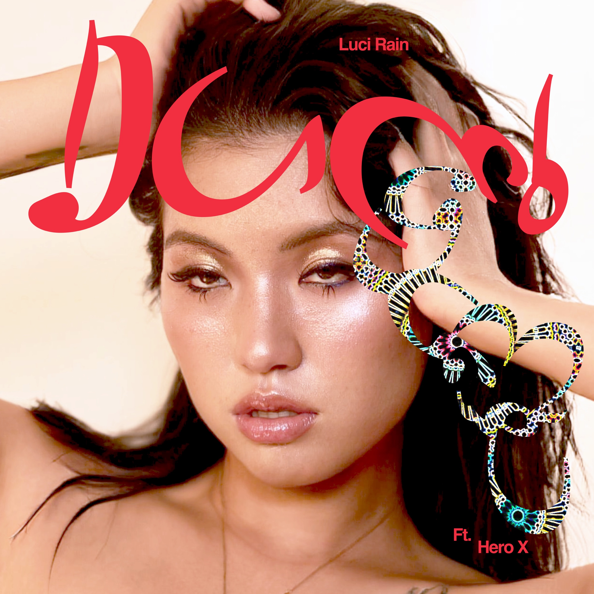



Poster for Midnight Ambiguous Zone, a screening programme organised by Diaspora East Cinema, launched during WorldPride Amsterdam, July 2026.
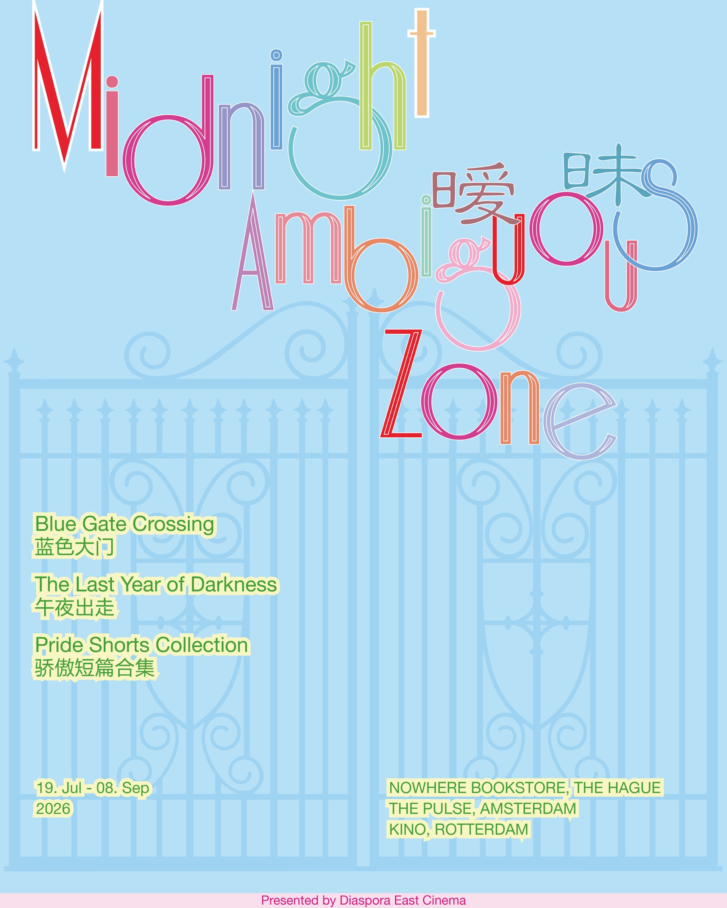
Visual identity for Diaspora East Cinema, drawing on Du Fu’s Tang Dynasty poem Twin Swallows 双燕.
Living on the road, I start at twin swallows;
Mud in their beaks, they enter this hall.
They too would flee from damp and heat that follow,
And pass through warmth and cold through all.
Now autumn holds both earth and sky so still;
I too have left my far and foreign will.
旅食惊双燕，衔泥入此堂。
应同避燥湿，且复过炎凉。
今秋天地在，吾亦离殊方。
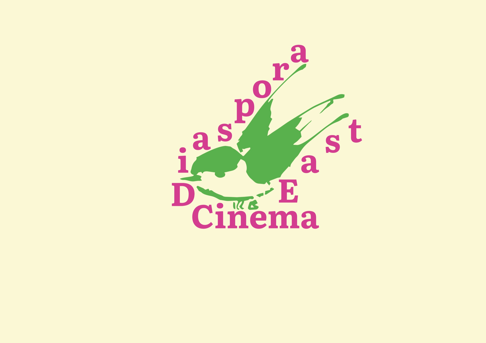
One of the 5.5 × 2 meter billboards created at Werkplaats Typografie for Visit Arnhem, portraying the city of Arnhem through the perspective of Barbershop Amir, a local barbershop. Presented at Printed Matter’s LA Art Book Fair, ArtCenter College of Design, South Campus, Pasadena, California, 2026.


Documentary, 21 minutes 15 seconds. Unreleased. Presented by The Box, Werkplaats Typografie, as a private screening at LAB111, Lab 2, Amsterdam, 2026.
Film poster and title design by Lisa Lagova

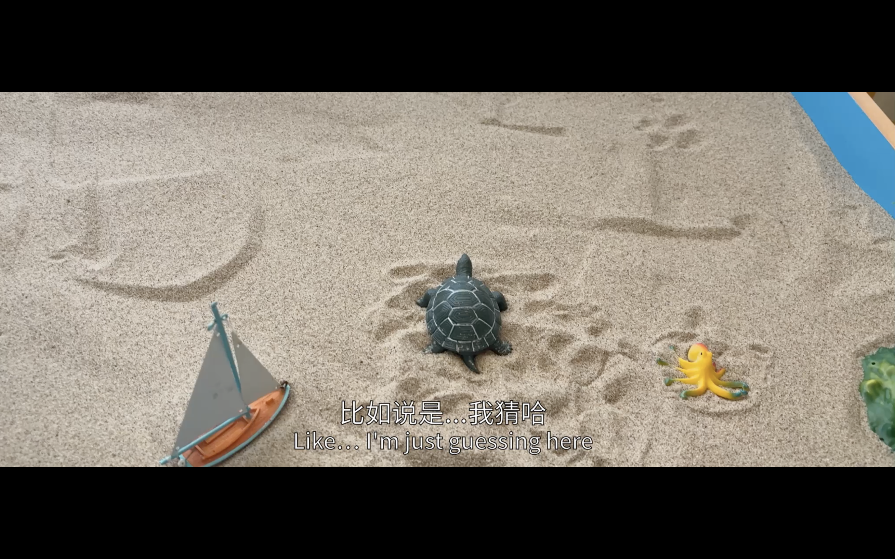


This series of A0 posters explores gossip as a universal yet deeply personal form of social interaction. Conversations in various settings, particularly among non-English speakers, were recorded to capture fragments of private and intimate exchanges.
The recordings were translated into English using software, then deconstructed and reassembled into entirely new forms of gossip. By transforming these conversations, the work explores how gossip connects people while becoming fragmented, reinterpreted and distorted as it crosses linguistic and social boundaries.
One of the posters was presented in the group exhibition Forms Of (Ex-)Change, Het Nieuwe Instituut, Rotterdam, 17 May – 5 October 2024.
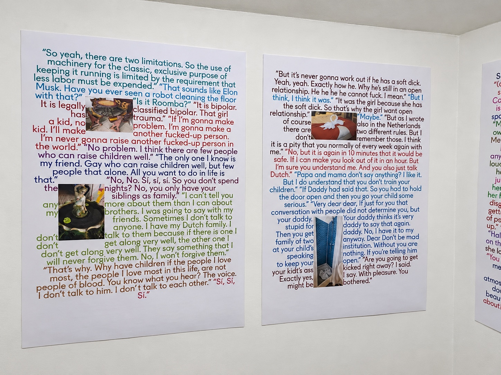
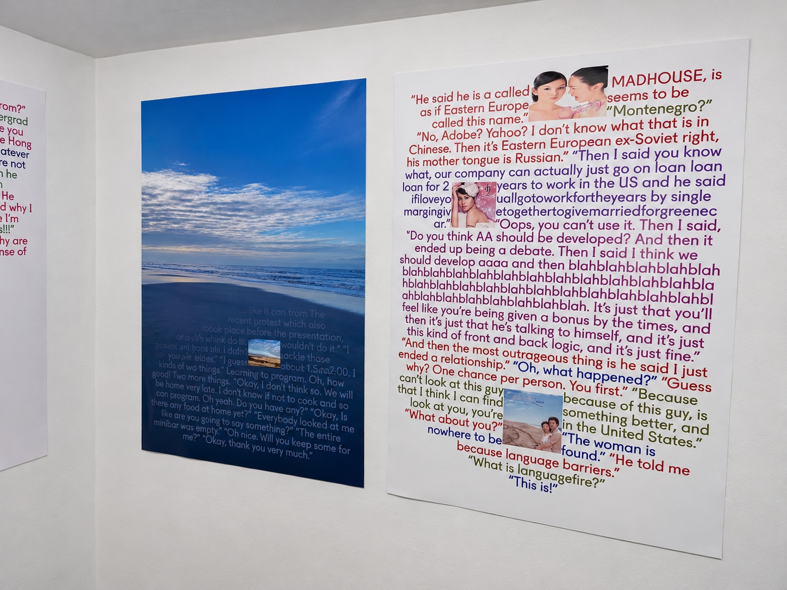
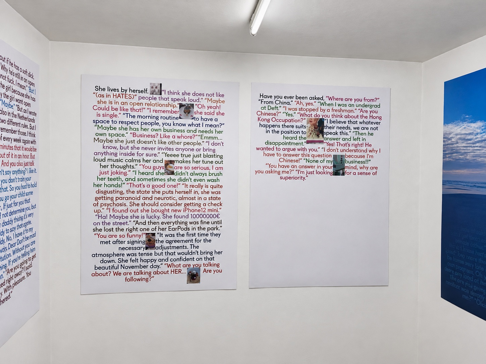
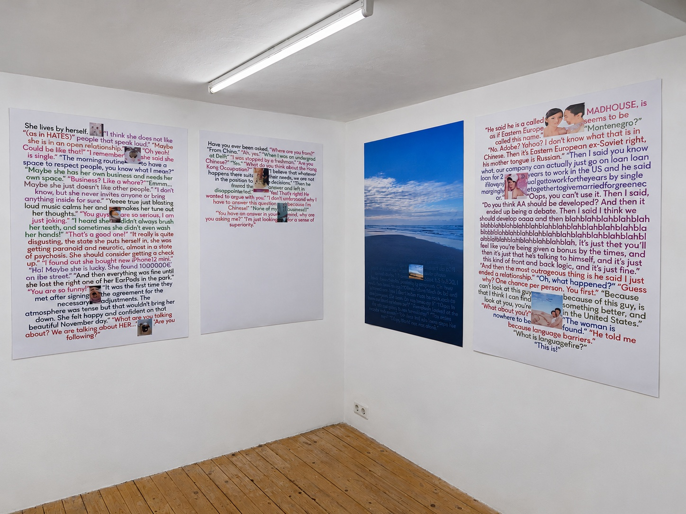
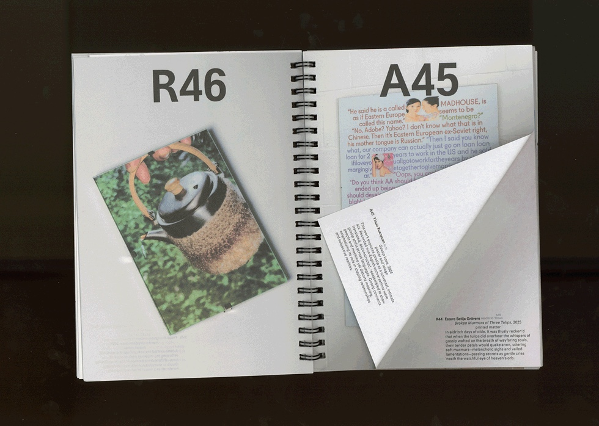
Poster for Nuno Beijinho’s exhibition Affairs, 2025
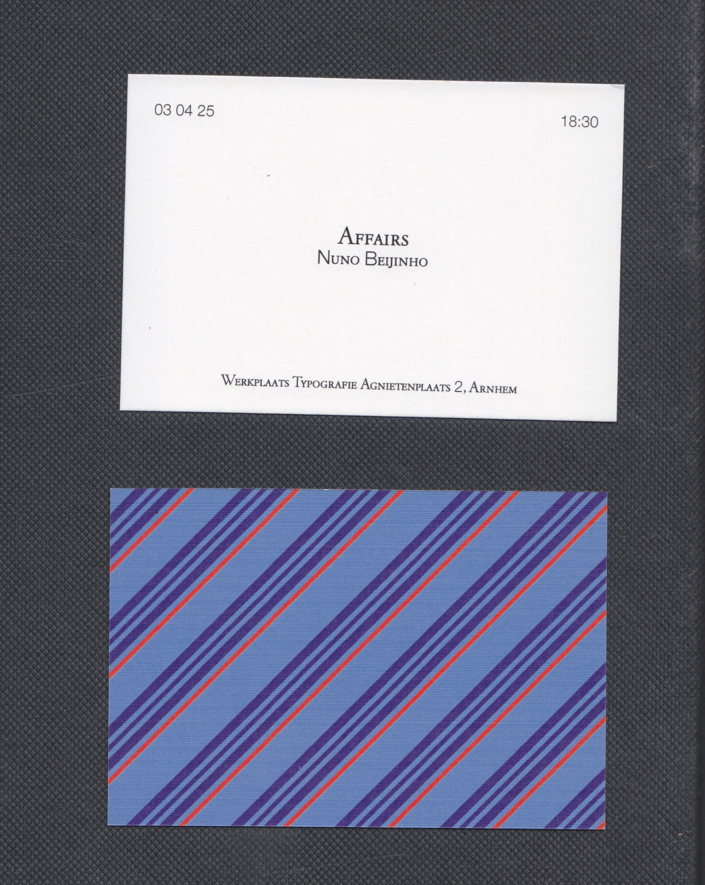